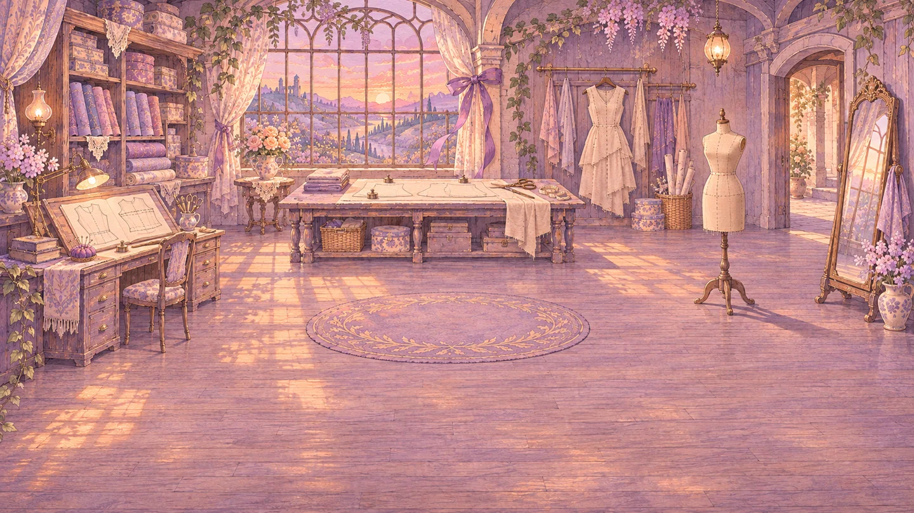

About
Meet the creator
Through this garden, I want to rediscover talents set aside by everyday life, return to what I left unfinished, and pursue what I still hope to do.
Study areas
Experience
For collaborations & workyfubw@connect.ust.hk
Meet the garden
Life and work can alienate us from ourselves, leading us to set aside, abandon or forget our earliest talents. Garden of Afterlight begins with the wish to rediscover them.
This imagined world holds what I want to recover, what I once left unfinished, and what I hope to continue in the future. It is a reflection of my ideal inner world.

Production process
Select a stage to see the decisions, tools and output.
Playtest feedback informs the next revision.
The 3D prototype offers first-person exploration; dedicated 3D gameplay is not yet implemented.